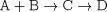

Stochastic Simulation Example
In this section we illustrate the important techniques of stochastic simulation in gPROMS using a simple model of an isothermal batch reaction. The following reactions occur in the reactor, D being the desired product.

The reactor initially contains 10m3 of an equimolar mixture of A and B. The temperature is held constant at 353K and the reaction is allowed to progress for 1 hour. The reaction rates are assumed to follow Arrhenius's law.
Stochastic gPROMS process model
A simple, generic model for an isothermal liquid-phase CSTR is used to model the process
# MODEL LiquidPhaseCSTR PARAMETER # Number of components NoComp AS INTEGER # Number of reactions NoReac AS INTEGER Density AS ARRAY(NoComp) OF REAL # Reaction data (Arrhenius law) ArrhConstant AS ARRAY(NoReac) OF REAL ActivationEnergy AS ARRAY(NoReac) OF REAL # Reaction orders Order AS ARRAY(NoComp,NoReac) OF INTEGER # Component stoichiometric coefficients Nu AS ARRAY(NoComp,NoReac) OF INTEGER # Gas constant R AS REAL VARIABLE Fin AS MolarFlowrate Xin AS ARRAY(NoComp) OF MolarFraction Fout AS MolarFlowrate X AS ARRAY(NoComp) OF MolarFraction HoldUp AS ARRAY(NoComp) OF Moles C AS ARRAY(NoComp) OF MolarConcentration T AS Temperature TotalHoldup AS Moles TotalVolume AS Volume ReactionConstant AS ARRAY(NoReac) OF NoType Rate AS ARRAY(NoReac) OF NoType EQUATION # Material balance FOR i := 1 TO NoComp DO $HoldUp(i) = Fin*Xin(i) - Fout*X(i) + TotalVolume*SIGMA(Nu(i,)*Rate) ; END # Reaction rates FOR j := 1 TO NoReac DO ReactionConstant(j) = ArrhConstant(j) * EXP(-ActivationEnergy(j)/R/T) ; Rate(j) = ReactionConstant(j) * PRODUCT(C^Order(,j)) ; END # Total volume and total holdup TotalVolume = SIGMA(Holdup/Density) ; TotalHoldup = SIGMA(HoldUp) ; # Molar fractions and concentrations Holdup = X * TotalHoldup ; Holdup = C * TotalVolume ;
Now we assume the that temperature of the reaction may change from batch to batch. This can be modelled using a normal distribution with a mean of 353K and a standard deviation of 2K. To see the effect of this, we need to introduce a new composite Model to include a number of scenarios:
# MODEL Stochastic_LiquidPhaseCSTR PARAMETER # define common PARAMETERs here so their values can be propagated # to each scenario # ----------------------------------------------------------------- NoComp AS INTEGER NoReac AS INTEGER Density AS ARRAY(NoComp) OF REAL ArrhConstant AS ARRAY(NoReac) OF REAL ActivationEnergy AS ARRAY(NoReac) OF REAL Order AS ARRAY(NoComp,NoReac) OF INTEGER Nu AS ARRAY(NoComp,NoReac) OF INTEGER R AS REAL # ----------------------------------------------------------------- NoScenarios AS INTEGER NoInt_PMF AS INTEGER DEFAULT 20 Upper_PMF AS REAL DEFAULT 1 Lower_PMF AS REAL DEFAULT 0.8 DISTRIBUTION_DOMAIN Dist_PMF AS (Lower_PMF:Upper_PMF) UNIT Scenarios AS ARRAY(NoScenarios) OF LiquidPhaseCSTR VARIABLE T AS ARRAY(NoScenarios) OF Temperature ProdMolFrac AS ARRAY(NoScenarios) OF MolarFraction PMFmean AS NoType PMFvariance AS NoType PMFstddev AS NoType # temp variable to count occurrences of Output in a particular interval: PMFacc AS DISTRIBUTION(Dist_PMF,NoScenarios) OF NoType # pdf function for Output: PMF_pdf AS DISTRIBUTION(Dist_PMF) OF NoType EQUATION FOR i := 1 TO NoScenarios DO T(i) = Scenarios(i).T ; END PMFmean = SIGMA(ProdMolFrac)/NoScenarios ; PMFvariance = SIGMA( (ProdMolFrac - PMFmean)^2 )/NoScenarios ; FOR i := Lower_PMF TO Upper_PMF DO FOR j := 1 TO NoScenarios DO IF i - (Upper_PMF-Lower_PMF)/NoInt_PMF/2 <= ProdMolFrac(j) AND ProdMolFrac(j) < i + (Upper_PMF-Lower_PMF)/NoInt_PMF/2 THEN PMFacc(i,j) = 1 ; ELSE PMFacc(i,j) = 0 ; END END PMF_pdf(i) = SIGMA(PMFacc(i,))/NoScenarios ; END
We have defined new distributed Variables to contain the values of the Variables of interest in each scenario. These are T for the temperature and ProdMolFrac for the mole fraction of the product D (i.e. x_4). Again, Parameters are defined that describe the upper and lower limits of the distribution and its coarseness. Finally, Variables are defined for the mean, variance and standard deviation of the product mole fraction. The equations are the same as were described before, except that there is no equation for the standard deviation or to relate the variable ProdMolFrac to the X(4) Variables in each scenario. While we could include the equation for the standard deviation in this model, by using the equation:
PMFstddev^2 = PMFvariance ;
this tends to slow the simulation down. The alternative used here is to Assign PMFstddev to a temporary value in the Process section and to Reset it at the end of the simulation using:
SCHEDULE SEQUENCE ... RESET xxx.PMFstddev := SQRT(OLD(xxx.PMFvariance)) ; END END
The final difference is the missing equation relating ProdMolFrac to Scenarios().X(4). This is because we are plotting a pdf of a dynamic variable and want to avoid slowing the simulation but are demonstrating a different approach to the one described before (where the additional 'End' variable was used). Here, we can avoid this additional variable simply by Assigning ProdMolFrac itself and then Resetting at the end of the simulation. The disadvantage with this approach is that you cannot plot the mean of the distribution over time; it only contains the correct value at the end of the simulation, when ProdMolFrac gets assigned the correct values. In this example, we were not concerned with plotting the mean, etc., over time and so this approach is an appropriate alternative. The final extract of the gPROMS project, the Process entity, is shown below.
# PROCESS Stochastic UNIT R101 AS Stochastic_LiquidPhaseCSTR SET WITHIN R101 DO NoScenarios := 1000 ; Upper_PMF := 0.95 ; Lower_PMF := 0.92 ; NoInt_PMF := 20 ; Dist_PMF := [ BFDM, 1, NoInt_PMF ] ; NoComp := 4 ; NoReac := 2 ; Nu := [ -1, 0, -1, 0, 1, -1, 0, 1 ] ; Order := [ 1, 0, 1, 0, 0, 1, 0, 0 ] ; R := 8.31441 ; # kJ/kmol/K ArrhConstant := [ 8E-3, 1E-2 ] ; # m3/kmol s ActivationEnergy := [ 8000, 6000 ] ; # kJ/kmol Density := [ 17.48, 17.15, 10.24, 55.56 ] ; # kmol/m3 END ASSIGN WITHIN R101 DO PMFstddev := 0 ; FOR i := 1 TO NoScenarios DO ProdMolFrac(i) := 0 ; WITHIN Scenarios(i) DO Fin := 0 ; Fout := 0 ; Xin := [ 0.5, 0.5, 0, 0 ] ; T := NORMAL(353, 2) ; END END END INITIAL WITHIN R101 DO FOR i := 1 TO NoScenarios DO WITHIN Scenarios(i) DO X(2) = X(1) ; X(3) = 0 ; X(4) = 0 ; TotalVolume = 10 ; END END END SCHEDULE SEQUENCE CONTINUE FOR 3600 RESET FOR i := 1 TO R101.NoScenarios DO R101.ProdMolFrac(i) := OLD(R101.Scenarios(i).X(4)) ; END END RESET R101.PMFstddev := SQRT(OLD(R101.PMFvariance)) ; END CONTINUE FOR .01 END
Below are some comments on the PROCESS.
-
SET: This section illustrates a couple of useful features in gPROMS. The first is that some of the Parameters are having their default values overridden. The second is that all of the Parameters in the lower-level model (LiquidPhaseCSTR) are being propagated.
-
ASSIGN: In this section we assign the dummy values to ProdMolFrac and PMFstddev. Also, some of the degrees of freedom of the LiquidPhaseCSTR model are set, e.g. the inlet and outlet flowrates, which are set to zero. Finally, the temperature for each scenario is set a random value from the normal distribution, N(353,2).
-
INITIAL: A typical set of initial conditions are used here.
-
SCHEDULE: This sections illustrates the Resetting of the Variables ProdMolFrac and PMFstddev. Note that because PMFstddev depends on ProdMolFrac, the latter must be RESET before the former in a separate RESET task. If they are RESET in the same task, then PMFstddev will be RESET based on the values in ProdMolFrac from before the RESET task.
Finally, on some systems gRMS may not be able to plot the pdf Variables correctly (sometimes the value after the Reset is ignored by gRMS). A simple solution is to include a short Continue at the end of the Schedule. This is not an issue with the Excel output channel, although sending the values of a large number of Variables to Excel takes a considerable length of time. It is therefore recommended that you Monitor only the Variables that are necessary.